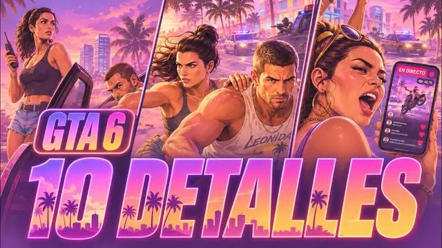
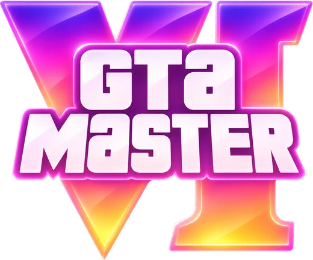
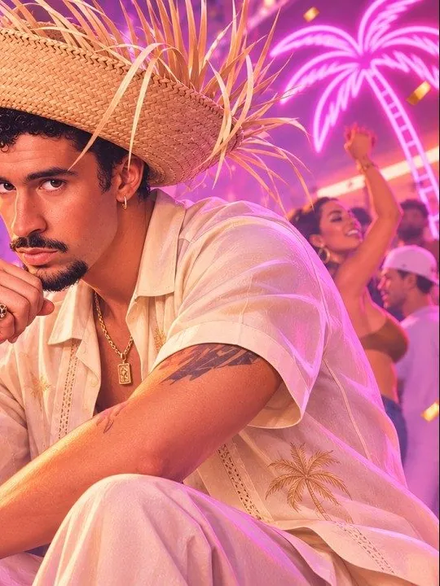
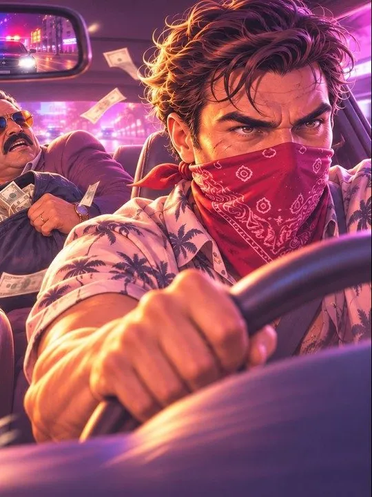
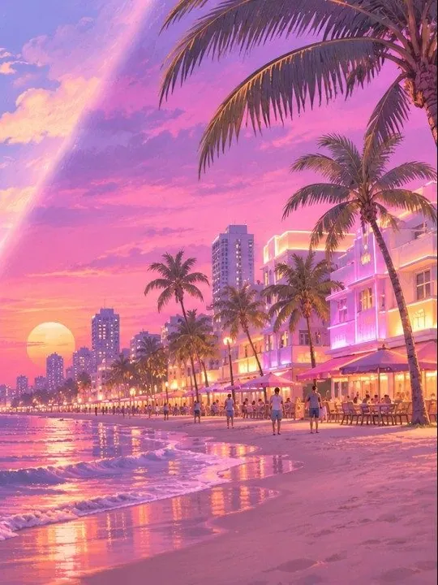
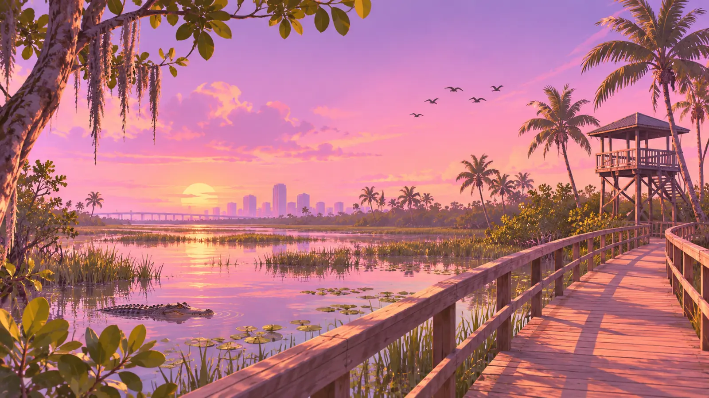

10 detalles que no viste en la mirada extendida
Revisamos el metraje oficial de la mirada extendida de Grand Theft Auto VI plano a plano para encontrar diez detalles que pasan desapercibidos a simple vista.




Canal de GTA VI en español
Revisamos el metraje oficial de la mirada extendida de Grand Theft Auto VI plano a plano para encontrar diez detalles que pasan desapercibidos a simple vista.

 PersonajesVer ahora
PersonajesVer ahora HistoriaVer ahora
HistoriaVer ahora Leonida2:33Ver ahora
Leonida2:33Ver ahora
Curiosidades2:20Ver ahora Personajes2:32Ver ahora
Personajes2:32Ver ahora
Historia2:48Ver ahora Personajes2:09Ver ahora
Personajes2:09Ver ahora Mecánicas2:09Ver ahora
Mecánicas2:09Ver ahora Leonida2:16Ver ahora
Leonida2:16Ver ahora Curiosidades2:19Ver ahora
Curiosidades2:19Ver ahora
Leonida2:07Ver ahora Mecánicas2:22Ver ahora
Mecánicas2:22Ver ahora Personajes2:18Ver ahora
Personajes2:18Ver ahora Análisis3:08Ver ahora
Análisis3:08Ver ahora
Jason y Lucia llevan la historia, pero Leonida está llena de secundarios. Estos son los que ya hemos analizado.

Protagonista. Exmilitar que acaba trabajando para traficantes en Leonida.
Ver el análisis
Protagonista. Su pasado incluye una etapa en prisión y una relación clave con Jason.
Ver el análisis

Amigo de Jason en los Cayos y socio de Brian. Desconfía de todo.
Ver el análisis
El estado ficticio de GTA 6, inspirado en Florida, se divide en seis regiones. De los rascacielos de Vice City a los pantanos de Grassrivers.
La gran ciudad de Leonida, inspirada en Miami: playa, neón y vida nocturna.
Vídeo: Vice City de día vs de noche →Los Cayos: islas, embarcaderos y personajes como Cal Hampton.
Vídeo: Quién es Cal Hampton →Los pantanos inspirados en los Everglades, con caimanes e hidrodeslizador.
Vídeo: Los pantanos de GTA 6 →La zona portuaria de Leonida.
Vídeo: Las 6 regiones →El interior de Leonida, más tranquilo que la ciudad.
Vídeo: Las 6 regiones →El parque nacional: montaña, bosque y naturaleza.
Vídeo: Todo lo que podrás hacer →
PlayStation 5 y Xbox Series X|S. Cuenta atrás hasta las 00:00 del 19 de noviembre, hora peninsular española.

Grand Theft Auto VI sale el 19 de noviembre de 2026. Rockstar Games y Take-Two han confirmado esa fecha para PlayStation 5 y Xbox Series X|S.
No en el lanzamiento. Las plataformas anunciadas son PS5 y Xbox Series X|S; Rockstar no ha dado fecha para la versión de PC.
Jason Duval y Lucia, una pareja que se mete en el mundo criminal de Leonida. En GTA MASTER tienes un vídeo dedicado a cada uno.
En Leonida, un estado ficticio inspirado en Florida. Su gran ciudad es Vice City, inspirada en Miami, y el mapa incluye zonas como los Cayos, los pantanos de Grassrivers, Port Gellhorn, Ambrosia y Mount Kalaga.
Cocoteo FM, la emisora de música latina contemporánea, la presentan Bad Bunny y RaiNao, en los papeles de El Martillo y La Gata.
Un canal de YouTube en español dedicado a GTA 6: detalles que no viste, personajes, mapa, curiosidades y análisis hechos con material oficial de Rockstar, sin filtraciones. Es un canal de fans, no oficial.